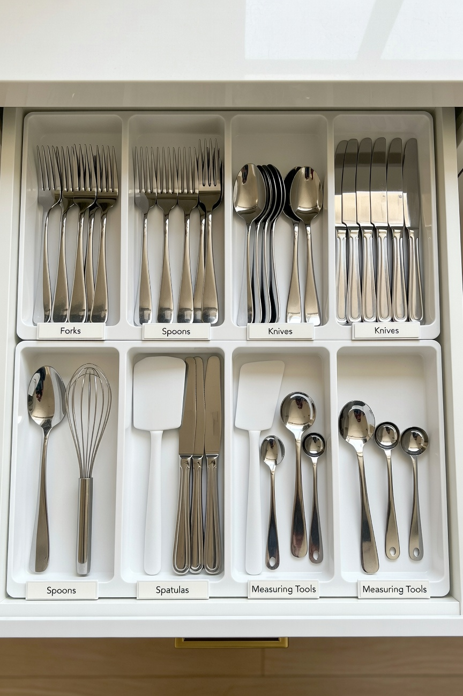
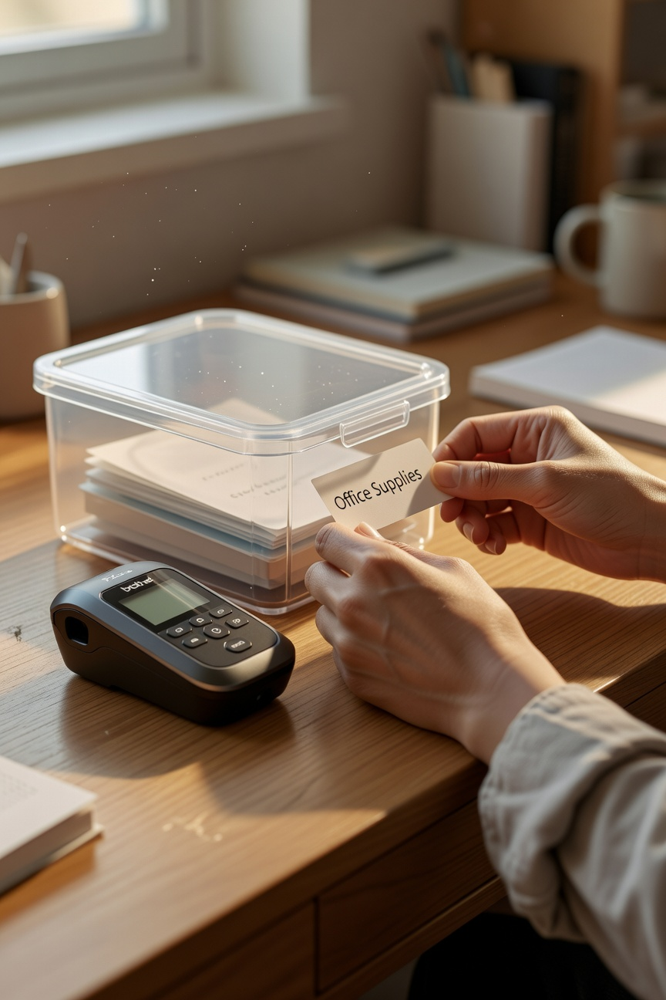
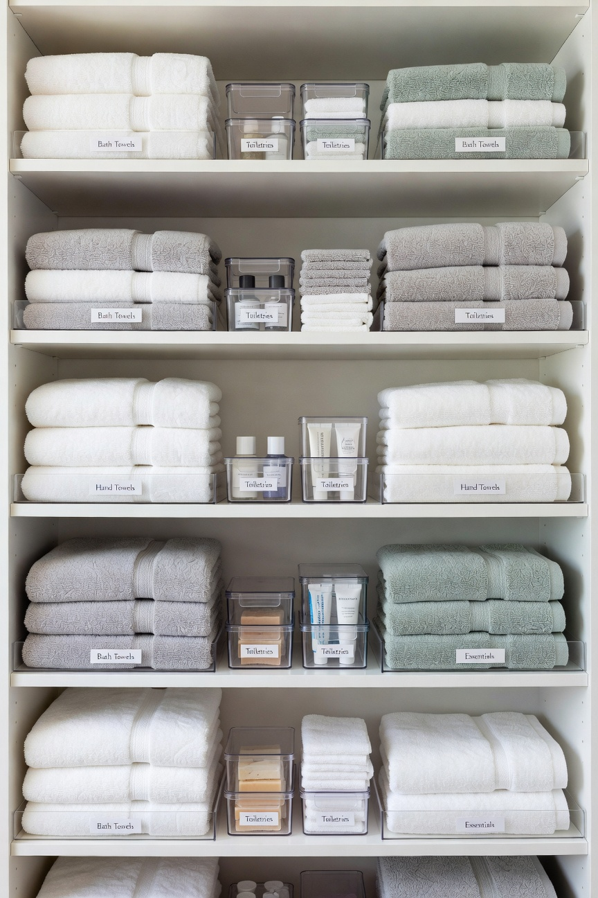
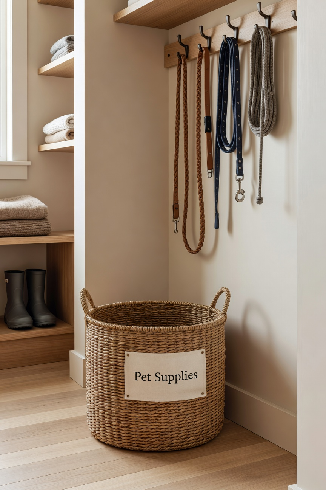

I need my house to be organized. This is not a preference -- it is a personality trait, possibly a character flaw, definitely something my family has accepted about me. A cluttered space makes my brain feel cluttered, and a cluttered brain makes me a less functional person, mother, and teacher. So the organization happens.
What I have learned over years of organizing a house with three kids, a dog, and a full-time job: you do not need to spend a lot of money to have an organized home. You need the right containers, a consistent system, and the willingness to actually maintain it. That last part is the hardest.
The Bins
Clear bins. Always clear. I want to see what is in something without opening it. I have clear bins in my pantry, my kids' bathroom cabinets, the linen closet, the garage -- everywhere. They stack properly, which matters more than people realize until they have a stack that does not work.
The Drawer Organizers

I have drawer organizers in every drawer in this house. Kitchen junk drawer -- now the kitchen organized drawer, thank you very much. Bathroom drawers, my desk drawers. Once a drawer has an organizer in it, it stays organized almost on its own because everything has a place to go back to. This is the magic of drawer organizers and I will die on this hill.
The Label Maker

I use a label maker. I know this sounds intense. It is a little intense. But when a label is on a bin, everyone in the house knows where things go and where to find things. The “Mom where is the --” questions have decreased significantly since the labels arrived. Worth every penny.
The Linen Closet Project

We tackled our linen closet this fall and it was genuinely transformative. Shelf dividers, small bins for toiletries, a dedicated section for each person's towels and extra sheets. It looks like a magazine photo in there now and I open it just to look at it sometimes. My family thinks this is funny. I do not care.
Carmy’s Corner

Even Carmy's things are organized. His leashes, treats, and grooming supplies all live in a basket near the back door. He does not care about this. I care about this. That is enough.
The Honest Truth About Organization
The products are just products. The real work is the system behind them and getting everyone in the house to use it. With teenagers that requires some ongoing negotiation. P is a work in progress. A inherited my organizational instincts. E was always naturally tidy. Carmy operates outside the system entirely and always will.
A well-organized home is worth the effort. It makes daily life calmer and easier for everyone. I am a true believer and I will keep preaching it.
-- Christin Marie